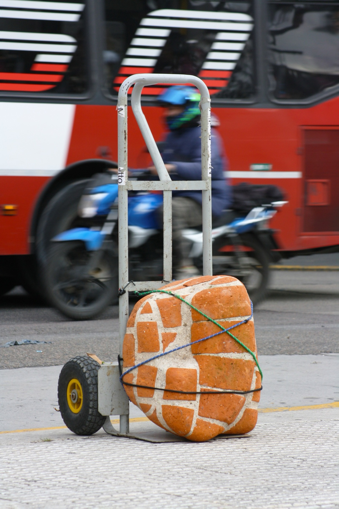
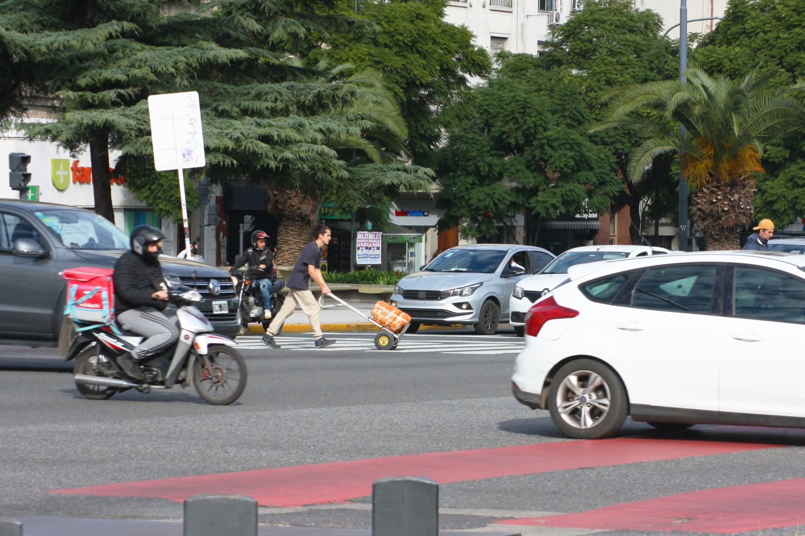
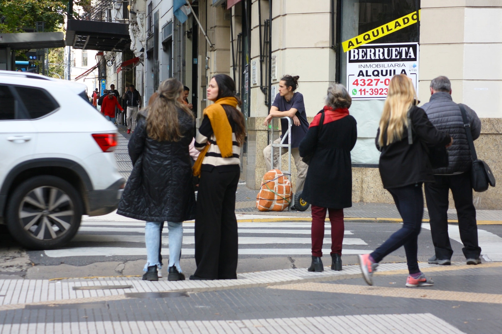
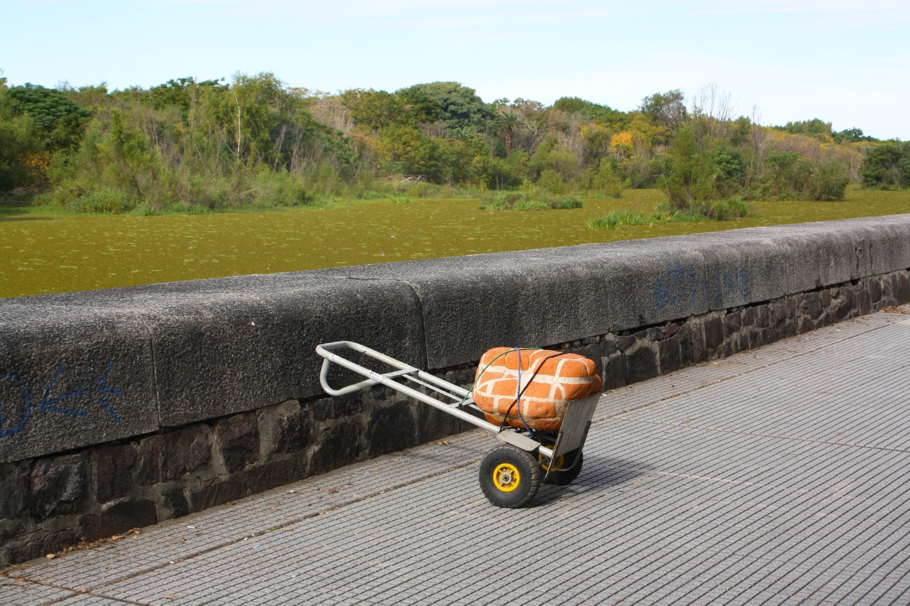

Obra2024
Todo vuelve

- Materiales
- Fragmento de muro erosionado por el Río de la Plata en la Costanera Sur, proveniente de las demoliciones para la construcción de la Red de Autopistas Urbanas durante la última dictadura cívico-militar.
- Agradecimientos
- Mireya Baglietto, Coordenadas Art



